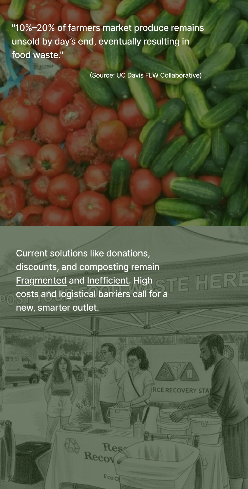
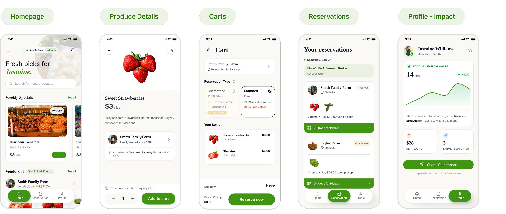
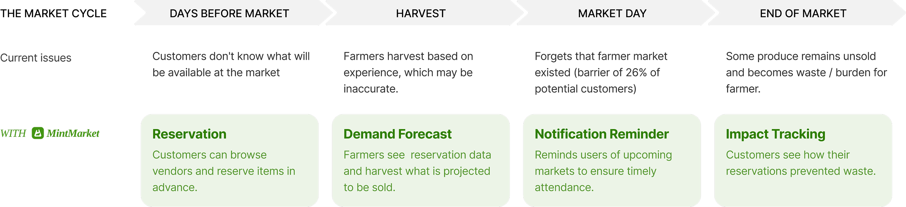

MintMarket

Team Project : Chloe, Keller, Yihan

Periodic farmer markets often face significant produce waste due to demand guesswork. MintMarket’s reservation system gives farmers precise data to harvest only what is projected to be sold.
Personalized reminders also drive market attendance, addressing the barrier cited by 26% of potential customers.

